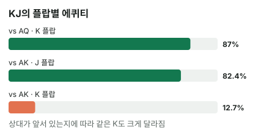

안녕하세요. "K 페어를 맞췄는데 졌다" — 이런 판, 한 번쯤 있으시죠. 상대가 K와 더 높은 카드를 같이 들고 있었던 거예요.
바로 앞 글 I14에서 K2가 K를 맞추고도 AK에게 크게 지는 장면이 나와요. 그 글이 "맞았을 때 다루기 쉬운가"를 봤다면, 오늘은 그런 판이 왜 생기는지를 끝까지 따라가요. 프리플랍에서 얼마나 불리한지, 플랍에서는 어떤 모습으로 나타나는지 숫자로 세어 볼게요.
이 글에서 배울 것
- 도미네이트의 뜻과, 카드 한 장을 공유하면 프리플랍 에퀴티가 얼마나 깎이는지
- 공유한 카드를 맞추면 왜 상대도 같이 맞추는지 — 990가지를 이김·비김·짐으로 나눠 보기
- 도미네이트는 프리플랍 관계라서, 플랍에 따라 사정이 달라지는 모습
1단계. 도미네이트란?
정의 한 줄
도미네이트 = 두 핸드가 같은 숫자 한 장(예: K)을 갖고 있고, 나머지 한 장은 한쪽이 더 높은 관계예요. KJ vs AK라면 K는 같고, J < A예요. 이때 KJ가 도미네이트당했다(눌렸다)고 해요.
여기서 나머지 한 장을 키커라고 해요. 키커 = 같은 페어끼리 붙을 때 승부를 가르는 나머지 카드예요.
동점이면 다른 과목으로
비유하면 동점일 때 다른 과목 점수로 순위를 가리는 시험이에요. 두 사람이 국어(K)에서 똑같이 만점을 받으면, 순위는 수학(키커)에서 갈리죠. 그런데 수학은 상대가 늘 더 높아요.
포커로 옮기면, K 페어끼리 붙으면 K로는 승부가 안 나고 J와 A의 싸움이 돼요. J는 A를 못 이기니, K를 맞춰서 생긴 승부는 대개 상대 쪽으로 가요.
이게 무슨 뜻이냐면
KJ가 AK를 상대로 쓸 수 있는 카드는 사실상 J 한 장 쪽이에요. K는 맞아도 상대의 K와 맞서기만 할 뿐, 우리를 앞서게 해 주지 못하거든요. 두 장 중 한 장의 힘이 상대에게 묶인 거예요.
2단계. 프리플랍 숫자로 보기 (몬테카를로)
| 우리 핸드 | 상대 | 우리 에퀴티 | 관계 |
|---|---|---|---|
| K♠J♦ | A♥K♣ | 약 26.27% | K 공유, 우리 키커가 낮음 |
| K♠J♦ | K♥Q♣ | 약 26.51% | K 공유, 우리 키커가 낮음 |
| A♥T♦ | A♠K♣ | 약 27.04% | A 공유, 우리 키커가 낮음 |
| Q♥9♦ | Q♠J♣ | 약 27.56% | Q 공유, 우리 키커가 낮음 |
| K♠J♦ | A♥Q♣ | 약 37.62% | 공유 없음, 상대 두 장이 각각 더 높음 |
| K♠J♦ | 9♥9♣ | 약 44.08% | 페어 vs 높은 카드 두 장 |
같은 "높은 카드 상대"인데 왜 이렇게 다를까
AQ도 AK도 "우리보다 높은 카드를 든 핸드"예요. 그런데 AQ 상대로는 K를 맞춰도, J를 맞춰도 우리 페어가 앞서요. AK 상대로는 K가 묶여서 J 쪽만 남죠.
차이는 37.62 − 26.27 = 11.35, 같은 판을 100번 하면 11번 정도 몫이 사라지는 셈이에요. 카드 한 장을 공유했다는 것만으로요.
오늘 본 도미네이트는 모두 비슷한 높이
공유하는 숫자가 A든 K든 Q든, 오늘 표의 도미네이트 네 줄은 약 26.27%에서 약 27.56% 사이였어요. 다만 이건 오늘 고른 예들의 범위예요. 무늬가 같은지, 숫자가 이어져 스트레이트 길이 있는지에 따라 다른 도미네이트는 숫자가 달라질 수 있어요.
99보다 AK가 더 무서운 이유
표의 마지막 줄도 보세요. KJ는 페어인 99를 상대로 약 44.08%로, AK 상대보다 훨씬 잘 싸워요. 99를 상대로는 K든 J든 맞으면 앞서지만, AK 상대로는 K가 묶여 있으니까요. "이미 페어인 상대"보다 "카드를 공유한 상대"가 더 무서울 수 있는 거예요.
3단계. 플랍에서 세어 보기 — 같은 K, 다른 결과
K가 떨어진 플랍
우리 
 · 보드
· 보드 

K♠J♦가 K 탑페어를 맞췄어요. 같은 플랍에 J가 떨어진 경우도 한 줄로 같이 놓아 볼게요.
| 플랍 | 상대 | 990가지 중 이김 · 비김 · 짐 | 우리 에퀴티 |
|---|---|---|---|
| K♦ 8♣ 3♥ | A♥Q♣ (공유 없음) | 861 · 0 · 129 | 약 86.97% |
| K♦ 8♣ 3♥ | A♥K♣ (K 공유) | 120 · 12 · 858 | 약 12.73% |
| J♣ 8♣ 3♥ | A♥K♣ (K 공유) | 816 · 0 · 174 | 약 82.42% |

120가지를 뜯어보면
K 플랍에서 AK를 상대로 이긴 120가지는 전부 J가 한 장 이상 나온 판이에요. J가 한 장 나와 K·J 투페어가 된 판이 114가지, J가 두 장 나오거나 남은 K와 J가 같이 나와 풀하우스가 된 판이 6가지예요.
거꾸로 J가 나와도 A가 같이 나오면 상대가 K·A 투페어라 져요. 그러니 이 플랍에서 우리를 살리는 건 "A 없이 J" 하나뿐이에요.
비긴 12가지는 어떤 판일까
남은 K 한 장과 8·3 중 한 장이 깔리거나, 8·8이나 3·3이 깔리면 둘 다 똑같은 풀하우스가 돼요. 다섯 장이 같으니 키커가 쓰일 자리가 없어서 비겨요.
에퀴티는 비김을 반씩 쳐서 120 + 6 = 126가지를 990으로 나눈 값이라 약 12.73%예요. 표만 보고 120을 990으로 나누면 숫자가 조금 안 맞는 게 이 때문이에요.
우리가 맞춘 K가 상대도 도왔다
AQ에게는 K 페어로 크게 앞서요. 상대는 아무것도 못 맞췄으니까요. 하지만 AK에게는, 상대도 똑같이 K를 맞춰서 키커 싸움(J vs A)으로 넘어가요. 우리를 좋게 해 준 바로 그 카드가 상대도 똑같이 좋게 해 준 셈이에요.
J가 떨어진 플랍
이번엔 J♣ 8♣ 3♥예요. 우리는 J 페어, 상대 AK는 페어가 없어요. AK를 상대로 한 우리 에퀴티가 약 82.42%로 뒤집혀요. 공유하지 않는 카드가 맞으면, 도미네이트당한 쪽도 앞설 수 있어요.
이게 무슨 뜻이냐면
카드를 공유하면 페어로 이기는 길은 공유하지 않는 카드(J) 쪽만 남아요. AQ 상대로는 K 페어·J 페어 두 길이었는데, AK 상대로는 J 페어 한 길로 줄었죠. 2단계에서 두 숫자가 크게 벌어진 이유가 바로 이거예요.
물론 스트레이트나 플러시처럼 페어가 아닌 길은 공유와 상관없이 따로 있어요. K♦ 8♣ 3♥처럼 그 길이 거의 막힌 플랍이라서, 120가지가 전부 J 판이 된 거예요.
4단계. 실전에서 쓰는 법
- 상대가 강하게 레이즈하는 레인지에 AK·AQ·KQ처럼 높은 카드가 많이 들어 있다고 가정하면, 그 상대에게 KJ·QJ·AT 같은 핸드는 도미네이트당하기 쉬워요
- 그래서 상대가 강하게 나올수록 이런 핸드는 "좋아 보여도 조심"이에요. 공유할 카드가 맞았을 때 특히요
- 반대로 AK처럼 도미네이트하는 쪽은, 상대 레인지에 KJ·AT처럼 눌리는 핸드가 많을수록 유리해져요
왜 그럴까: 공유한 카드는 "같이 맞는 카드"예요
우리가 가장 기쁠 때 상대도 기뻐요
도미네이트가 무서운 건 에퀴티가 낮아서만이 아니에요. 우리가 "맞았다"고 느끼는 순간과 상대가 맞는 순간이 겹치기 때문이에요.
K♦ 8♣ 3♥에서 KJ는 탑페어라 벳도 하고 콜도 하고 싶어져요. 그런데 상대가 AK라면 그 플랍은 상대에게도 똑같이 좋은 플랍이에요. 서로 맞았다고 느끼니 판이 커지기 쉽고, 그 판은 대개 키커가 높은 쪽이 가져가요.
우리가 앞설 때는 상대가 조용해요
반대로 우리가 앞서는 J 플랍에서 상대 AK는 아무것도 없어요. 상대가 일찍 접을 수 있으니, 앞서는 판에서 받아 낼 돈은 적을 수 있어요. 그래서 도미네이트당한 쪽은 이길 판은 작게, 질 판은 크게 끝나기 쉬워요.
이게 무슨 뜻이냐면, 프리플랍 에퀴티 약 26.27%는 아무도 벳하지 않을 때의 몫이에요. 벳이 오가는 실제 판에서는 이 몫보다 더 나쁜 결과가 나올 수 있어요.
자주 하는 실수
실수 1. "높은 카드 두 장이니 좋은 핸드" KJ는 높은 카드 두 장이라 좋아 보여요. 그런데 상대가 AK면 약 26.27%로, 페어인 99를 상대할 때(약 44.08%)보다도 한참 낮아요. 핸드의 좋고 나쁨은 상대가 무엇을 들었을 수 있느냐에 따라 달라요. 대신 상대가 강하게 나오면 "그 레인지에 내 카드와 같은 숫자를 더 좋은 키커로 쥔 핸드가 있나"를 물어요.
실수 2. 탑페어를 맞추면 앞서 있다고 보기 K♦ 8♣ 3♥에서 K♠J♦는 탑페어지만, 상대가 AK면 약 12.73%예요. 탑페어라는 이름보다 키커가 무엇이고, 상대가 같은 K를 더 좋게 쥘 수 있는지가 승부를 가르는 판이 있어요. 대신 탑페어를 맞췄을 때 "얼마나 키울까"보다 "상대가 누구일 때 이기는 탑페어인가"를 먼저 따져요.
실수 3. 모든 상대를 AK로 보기 도미네이트를 배우고 나면 반대로 겁부터 먹기도 해요. 같은 플랍에서 상대가 AQ라면 K♠J♦는 약 86.97%로 크게 앞서요. 대신 상대 레인지에서 우리를 누르는 핸드와 우리가 누르는 핸드를 둘 다 떠올려 봐요.
"그럼 AT 같은 핸드는 언제나 나쁜 거예요?"
좋은 질문이에요. 아니에요. 상대가 넓은 레인지(약한 A나 상관없는 카드가 많은)라면 AT는 좋은 핸드예요. 그 상대에게는 A9·A8처럼 AT가 누르는 쪽이 되는 핸드도 섞여 있을 수 있죠.
문제는 상대가 AK·AQ처럼 좁고 강한 레인지일 때예요. 그래서 "내 핸드가 좋은가"가 아니라 "이 상대의 레인지에 비해 좋은가"로 생각해야 해요. 핸드 하나를 상대 레인지 전체와 붙여 보는 법은 I06에서 다뤄요.
선생님의 한마디
상대가 강하게 나왔을 때 이렇게 점검해요.
- 내 두 카드 중 상대 레인지와 겹칠 카드가 어느 쪽인지 먼저 찾기
- 그 카드가 플랍에 떨어지면 "상대도 맞췄을 수 있다"를 떠올리고, 판을 키우기 전에 한 번 멈추기
- 상대 레인지에 내가 누르는 핸드(AT라면 A9·A8 같은 더 약한 A)도 있는지 같이 세어 보기
연습 문제
홀덤학습 에퀴티 계산기에 두 핸드와 보드를 넣어 확인해 보세요.
문제 1. 우리 Q♥9♦, 상대 Q♠J♣(2단계 표의 도미네이트 관계)예요. 플랍 ① Q♣ 6♥ 2♠ ② 9♣ 6♥ 2♠ 중 어느 플랍에서 판을 키우고 싶을까요? 각 플랍의 우리 에퀴티와 함께 이유를 말해 보세요.
정답 보기
① 약 15.15%(990가지 중 이김 120 · 비김 60 · 짐 810). 공유한 Q가 떨어져서 상대도 Q 페어예요. 키커 9가 J에 밀려요. 비김이 60가지나 되는 건, 보드에 6이나 2가 한 장 더 와서 투페어가 되고 나머지 한 장이 A나 K라 둘 다 보드 카드를 키커로 쓰는 판 등이 있어서예요. J보다 높은 카드가 깔리면 우리 9도 상대 J도 쓰이지 않거든요.
② 약 84.34%(이김 835 · 짐 155). 공유하지 않는 9가 맞았고, 상대는 높은 카드 두 장뿐이에요. 이번엔 Q가 나와도 우리는 Q·9 투페어가 돼서 이겨요. 상대에게 필요한 건 주로 J예요.
그래서 판을 키우고 싶은 쪽은 ②예요. ①은 탑페어라도 "상대도 맞췄을 수 있는" 플랍이라 한 번 멈춰야 해요.
문제 2. 오늘의 K♠J♦ vs A♥K♣, 플랍이 Q♦ T♣ 9♥라면 누가 앞설까요? 상대가 이기려면 무엇이 나와야 할까요?
정답 보기
우리가 약 87.42%로 크게 앞서요(이김 861 · 비김 9 · 짐 120). K♠J♦가 두 장을 다 써서 9-T-J-Q-K 스트레이트를 이미 완성했거든요. 스트레이트는 키커가 필요 없어서, K를 공유한 불리함이 이 플랍에서는 사라져요. 상대가 이기는 120가지는 전부 J가 나온 판이에요. J가 오면 상대는 A-K-Q-J-T, 더 높은 스트레이트가 돼요. J와 A가 같이 오면 보드에 A-Q-J-T가 깔려 우리 K로도 같은 스트레이트가 돼서 비겨요(9가지). 이번엔 상대가 공유하지 않는 길(스트레이트)을 기다리는 처지가 된 거예요.
핵심 정리
- 도미네이트 = 같은 숫자 한 장을 공유하고 나머지 한 장이 더 낮은 관계. 공유한 카드는 맞아도 상대를 같이 도와요
- 그래서 페어로 이기는 길은 공유하지 않는 카드 쪽만 남아요. 스트레이트·플러시 같은 길은 보드에 따라 따로 열려요
- 오늘 본 도미네이트 네 예는 프리플랍 약 26.27%에서 약 27.56%로, 공유 없는 높은 카드 상대(약 37.62%)나 페어 상대(약 44.08%)보다 낮았어요
- 같은 K 탑페어라도 상대가 K를 공유하면 약 12.73%, 공유하지 않으면 약 86.97%예요. "무엇을 맞췄나"보다 "상대도 그걸 맞췄나"가 먼저예요
정리하며
오늘은 KJ가 AK를 만나면 왜 그렇게 불리한지 숫자로 봤어요.
프리플랍에서 K를 공유하면 약 26.27%, 공유하지 않는 AQ 상대로는 약 37.62%였죠. 플랍으로 가 보니 같은 K 탑페어가 AQ에게는 약 86.97%, AK에게는 약 12.73%였고, AK를 이긴 120가지는 모두 J가 나온 판이었어요. 공유한 카드는 맞아도 상대를 같이 돕기 때문에, 이기는 길이 공유하지 않는 쪽으로 좁아진 거예요.
다음 글 I16에서는 이 감각을 실제 결정에 써 봐요. 짧은 스택의 올인을 AQ로 받을지, 상대 레인지 안에 AQ를 누르는 핸드가 얼마나 있는지를 따져요.
AI 작성 · 숫자는 계산 검증 (프리플랍 몬테카를로 20,000번, 플랍은 전부 세기)